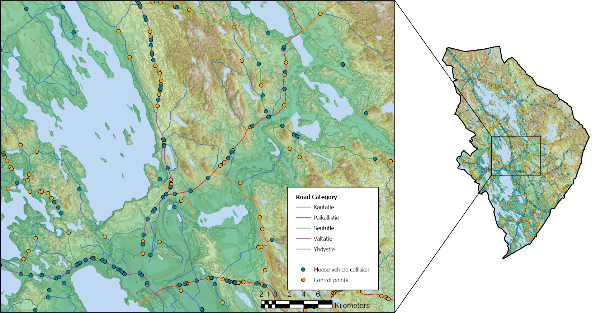

Exploring Moose-Vehicle Collisions in Finland through Spatial Analysis
As part of my professional portfolio, I undertook a project in collaboration with LUKE to investigate the increasing threat of ungulate-vehicle collisions, specifically collisions with moose in Nordic nations. The study focused on exploring the distribution of accidents on different roads and during different seasons, the effect of forest structure on moose-vehicle collisions (MVCs) recorded in two regions of Finland, and the various mitigation measures currently in place. Utilizing finer spatial data resolution, I analyzed the distribution of 1123 collisions obtained from the registry of wildlife damages and accidents in North Karelia and Ostrobothnia, with 78% and 65% of these collisions occurring on highways, respectively. The results revealed that almost 53% of collisions in both regions took place during the hunting season.
In addition, the study tested the impact of 18 forest structure variables and the density of moose observations on all recorded MVCs. The findings showed that the density of moose observations and canopy cover were positively related to the variation of MVCs in both regions. The model of Ostrobothnia reported that the volume of spruce trees and deciduous trees is positively related, while the mean height of spruce trees is negatively related to the spatial variation of MVCs. In contrast, the model of North Karelia only indicated a positive relationship between the stem count of deciduous trees and collisions. Based on the research outcomes, the study suggests that efforts to minimize the risk of MVCs require alternative technological advancements, such as using finer spatial data resolution to train systems to detect landscape features and better inform drivers through dynamic warning signs. These findings can serve as valuable insights for professionals, policymakers, and stakeholders involved in traffic safety and wildlife management.
The successful completion of this professional project in collaboration with LUKE and the quality of the research conducted has enhanced my professional profile, demonstrating my competence and expertise in the field. It has also given me valuable experience in utilizing advanced technologies and data analysis techniques to develop effective solutions for reducing the risks of ungulate-vehicle collisions.
If you are interested in reading the entire thesis, click on this link.